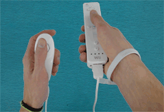

15 |
Pointer |
 |
|

You will need to connect a Nunchuk to use this control method. Use the Nunchuk to control the character and the Wii Remote to rotate the world. In this control method you will use the Pointer to rotate the world.
First you have to press and hold the A Button to freeze the world. While the A Button is held down - and the world is frozen - you can move the Pointer in a circle around the character to rotate. The world’s rotation will follow the rotation of the Pointer around the character. Try to move the Pointer smoothly and always in a circle around the character. If you point too far off the screen, you will lose control. |
 |
 |
 |